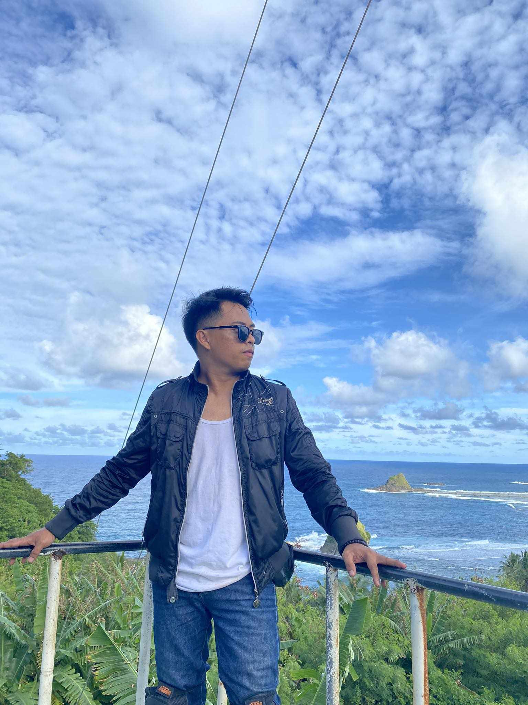
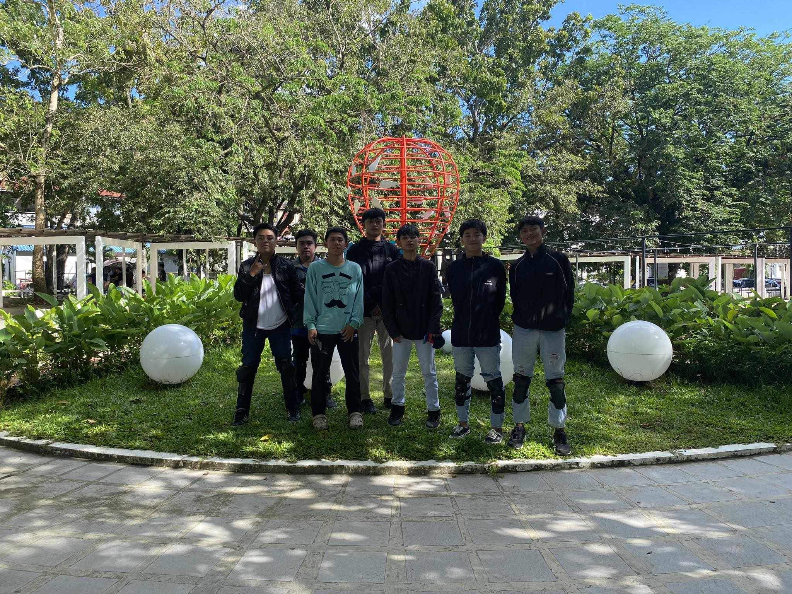
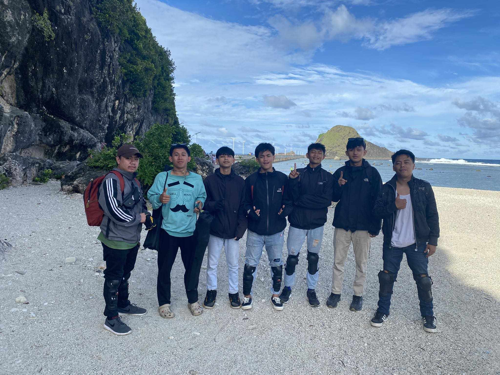
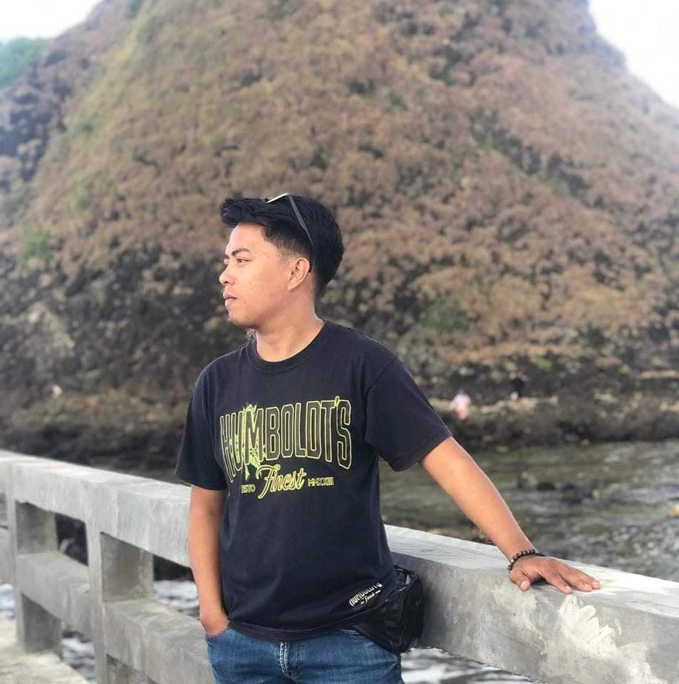

Welcome
 Welcome to my world of adventure! I'm Jaime E, Merilles, an explorer at heart, always seeking out new experiences, breathtaking landscapes, and thrilling challenges. Join me as I journey through the wonders of the world, one adventure at a time.
About Me
I am a 25 year old motor adventurous in any part of samar. Im from brgy: Guin-on Calbayog city samar, My journey into the world of motor adventure began with a simple desire for freedom and exploration. Over the years, that desire has evolved into a full-blown obsession, fueled by a love for adrenaline, a thirst for discovery, and a deep appreciation for the beauty of the great outdoors.
Education
I am student of Nortwest Samar State University, where I earned my Bachelor of Science degree in Computer Science.I completed my high school education at Burgos national high school montalban rizal and I choose bachelor of Science in Information Technology at Northwest Samar State University.
Skills and Expertise
- Map Reading
- Terrain Assessment
- Obstacle Negotiation
- Trail Finding
- Risk Management
Hobbies
When I'm not behind the lens, you can often find me immersed in the tranquility of nature, exploring new landscapes and capturing the essence of each moment through photography. Photography is not just a hobby for me; it's a means of self-expression and a way to preserve the memories of my adventures for a lifetime.
Photo Gallery
Contact Me

Feel free to contact me for any questions, feedback, or potential collaborations. You can reach me via email or phone.
Email: jrmerilles00@gmail.com
Phone: 09367839792